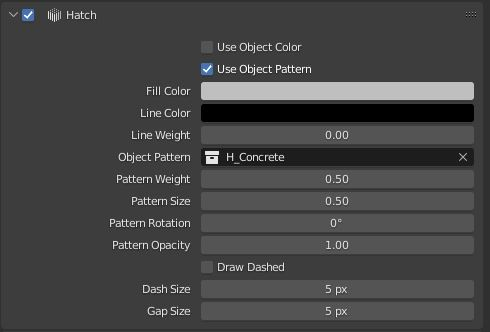

Hatches
Define Hatches to be used in Vector Exports.

- Material: The Material to apply this hatch to
- Render Visibility: Toggles if this hatch should be applied on vector export or not
- Fill Color: Solid Fill color for this Hatch (Set Alpha to 0 for none)
- Line Color: Outline Line Color for this Hatch (Set Alpha to 0 for none)
- Line Weight: Line Wight for the Outline Line of this Hatch
- Pattern: A collection to use as a custom pattern fill for this hatch.
- Hatch Patterns can be defined in the 0 to 1 range on the x,y plane.
- Hatch Patterns will draw all edges of objects in the hatch collection as the custom pattern
- Pattern Weight: Line Weight for the pattern fill
- Pattern Size: Scale factor for the pattern fill
- Pattern Rotation: Rotates the pattern fill for this hatch.
- Pattern Opacity: Sets the opacity for the pattern fill for this hatch.